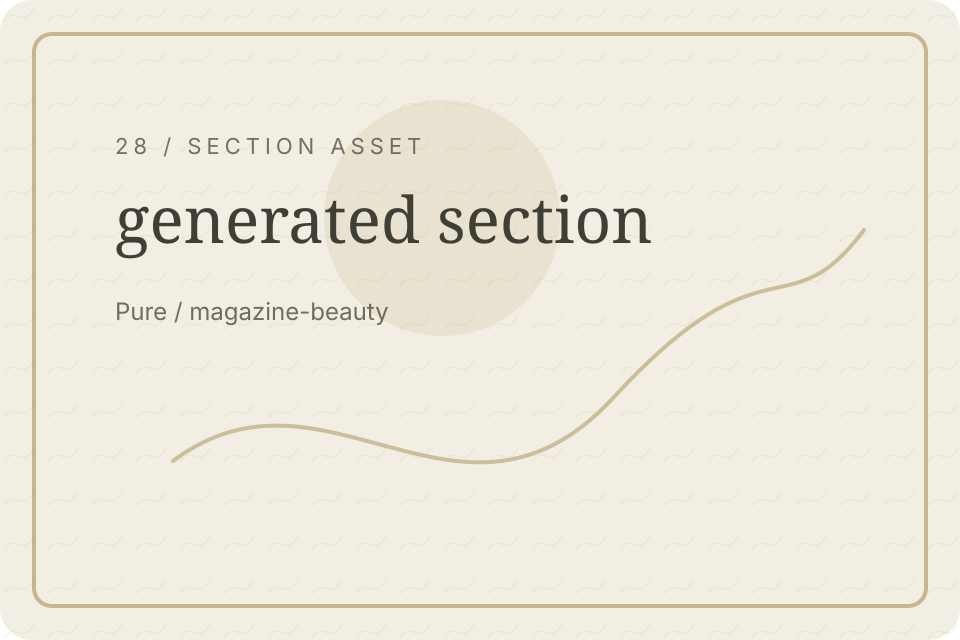
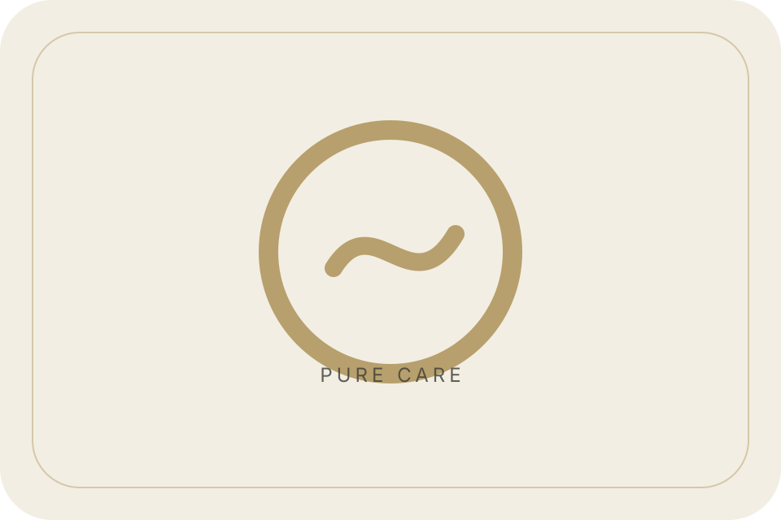

Pure / Error Hero
Page missing
This page could not be found, but you can continue calmly.

concept-specific hero asset for Error Hero
Pure / Service Routes
Care routes
Explore care or skin guidance.

care service icon set for Service Routes
Pure / Journal Route
Read guidance
Browse education while you search.
journal image for Journal Route
Pure / FAQ Route
Common questions
Find short answers quickly.
journal image for FAQ Route
Pure / Contact Route
Contact us
Send a message if you need help.
CTA image panel for Contact Route
Pure / Reassurance
No problem
Use one of the routes below to keep moving.
gold divider for Reassurance
Pure / Consultation Path
Need guidance
You can still request an evaluation.
CTA image panel for Consultation Path